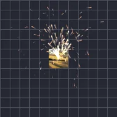

Parçacıklar
Katmandan parçacık saçar: kar, kıvılcım, konfeti, baloncuk, toz, kalp, yıldız, taç yaprağı ya da katmanın küçük kopyaları; yerçekimi, rüzgar ve girdap ile hareket eder. Bir ön ayarla başla, ardından yayıcıyı, miktarı ve kuvvetleri değiştir. Vuruşlarda her vuruşta bir patlama gönderir: müziğini seç, menüsünü aç ve önce Vuruşları işaretle'ye dokun.
Ayarlar
| Ayar | Tür | Aralık | Varsayılan |
|---|---|---|---|
| Parçacık | Seçim | Kar, Kıvılcım, Konfeti, Baloncuk, Toz, Kalpler, Yıldızlar, Taç yaprakları, Katman | Kar |
| Yayıcı | Seçim | Nokta, Çizgi, Alan, Ana hat | Çizgi |
| Yayım | Seçim | Sürekli, Patlama, Vuruşlarda | Sürekli |
| Oran | Sayı | 0 /s – 500 /s | 40 /s |
| Adet | Sayı | 0 – 1000 | 100 |
| Patlama zamanı | Sayı | 0 s – 3600 s (en fazla katmanın uzunluğu kadar) | 0 s |
| Tekrar aralığı | Sayı | 0 s – 60 s | 0 s |
| Vuruşlar | Seçim | Her vuruşta, Her 2. vuruşta, Her 4. vuruşta | Her vuruşta |
| BPM | Sayı | 20 – 300 | 120 |
| Ömür | Sayı | 0.1 s – 30 s | 10 s |
| Hız | Sayı | 0 – 5000 | 30 |
| Yön | Açı | -3600° – 3600° | 90° |
| Yayılım | Açı | 0° – 360° | 40° |
| Yerçekimi | Sayı | -5000 – 5000 | 300 |
| Rüzgar | Sayı | -5000 – 5000 | 0 |
| Girdap | Sayı | 0 – 500 | 18 |
| Boyut | Sayı | 0% – 1000% | 100% |
| Renk | Renk | – | #FFFFFF |
| Renk 2 | Renk | – | #8FD3FF |
| Ton | Sayı | 0% – 100% | 0% |
| Katman | Seçim | Parçacıkların altında, Parçacıkların üstünde, Gizli | Parçacıkların altında |
| Derinlik | Açık veya kapalı | – | Kapalı |
| Z hızı | Sayı | -5000 – 5000 | 0 |
| Z yayılımı | Sayı | 0 – 5000 | 0 |
| Perspektif | Sayı | 0 – 10 | 1 |
| Diğer ayarlar | Açık veya kapalı | – | Kapalı |
| Yayıcı boyutu | Sayı | 0% – 1000% | 100% |
| Yayıcı konumu | Nokta (X, Y) | -99999 px – 99999 px | 0 px, 0 px |
| Dolu başlat | Açık veya kapalı | – | Açık |
| Ömür değişimi | Sayı | 0% – 100% | 20% |
| Hız değişimi | Sayı | 0% – 100% | 50% |
| Hava direnci | Sayı | 0 – 20 | 1.2 |
| Girdap hızı | Sayı | 0 – 10 | 0.25 |
| Boyut değişimi | Sayı | 0% – 100% | 60% |
| Bitiş boyutu | Sayı | 0% – 1000% | 100% |
| Yön | Seçim | Serbest, Hareketi takip et | Serbest |
| Rastgele döndürme | Sayı | 0% – 100% | 100% |
| Dönüş | Sayı | -3600 °/s – 3600 °/s | 0 °/s |
| Dönüş çeşitliliği | Sayı | 0% – 100% | 50% |
| Belirme | Sayı | 0% – 100% | 5% |
| Sönme | Sayı | 0% – 100% | 15% |
| Pırıldama | Sayı | 0% – 100% | 0% |
| Renk modu | Seçim | Tek renk, Rastgele karışım, Ömür boyunca | Tek renk |
| Renk çeşitliliği | Sayı | 0% – 100% | 0% |
| Karışım | Seçim | Normal, Ekle, Ekran | Normal |
| Tohum | Sayı | 0 – 9999 | 0 |
Ön ayarlar
Efekt Kitaplığı'nda efektin ayrıntı sayfasından birini seçin. Her biri düzenlemeye devam edebileceğiniz hazır bir ayardır.
- Kar

Kıvılcımlar- Konfeti
- Baloncuklar
- Toz
- Kalpler
- Pırıltı
- Yapraklar
- Katman fıskiyesi
- Ritim konfeti